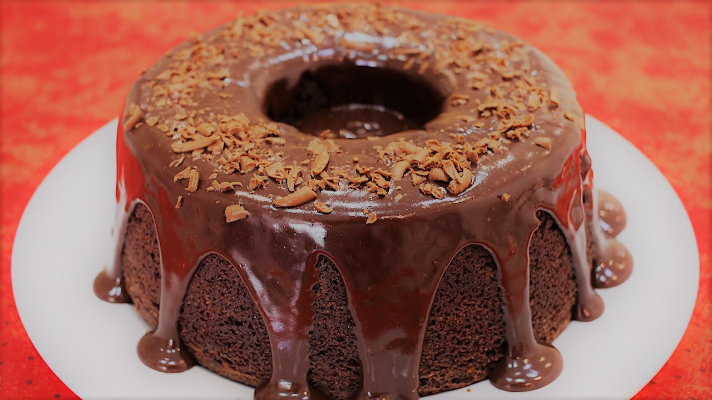

Receita de Bolo de Chocolate

Ingredientes
- 2 xícaras de farinha de trigo
- 1 e 1/2 xícaras de açúcar
- 3/4 xícara de cacau em pó
- 1 e 1/2 colheres de chá de fermento em pó
- 1 e 1/2 colheres de chá de bicarbonato de sódio
- 1 colher de chá de sal
- 2 ovos
- 1 xícara de leite
- 1/2 xícara de óleo vegetal
- 2 colheres de chá de extrato de baunilha
- 1 xícara de água fervente
Modo de Preparo
- Preaqueça o forno a 180°C. Unte e enfarinhe uma forma de bolo.
- Em uma tigela grande, misture a farinha, o açúcar, o cacau, o fermento, o bicarbonato e o sal.
- Adicione os ovos, o leite, o óleo e a baunilha. Bata em velocidade média por 2 minutos.
- Adicione a água fervente e misture até que a massa fique homogênea. A massa ficará bem líquida.
- Despeje a massa na forma preparada.
- Asse por 30 a 35 minutos ou até que um palito inserido no centro do bolo saia limpo.
- Deixe esfriar na forma por 10 minutos, depois retire da forma e deixe esfriar completamente em uma grade.